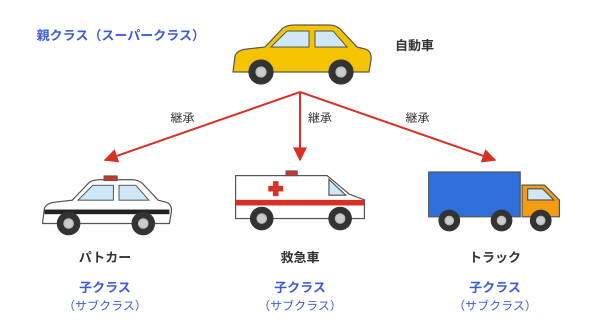
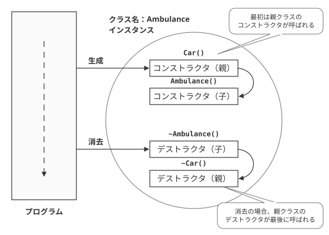
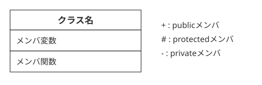
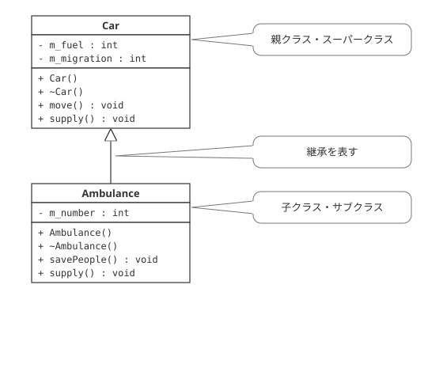
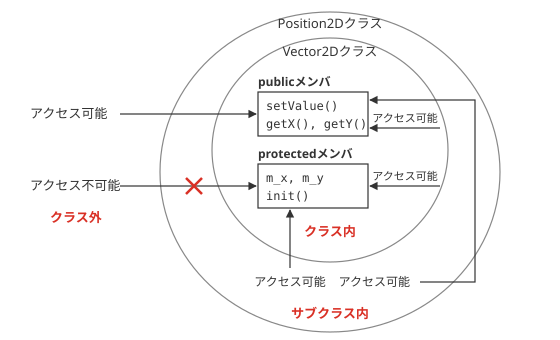
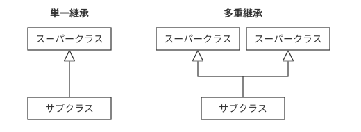

継承
継承の概念
C++言語に限らず、オブジェクト指向言語に備わっている重要な特性の１つに継承（インヘリタンス）があります。継承は、あるクラスのメンバを、他のクラスに引継ぐ（継承させる）という効果があります。
では、実際に継承とはどういうものか、さらに詳しく説明しましょう。すでに述べたように、クラスは、インスタンス、およびオブジェクトの「設計図」です。自動車の例を出すのならば、自動車の設計図がクラス、実際に工場で生産された自動車本体が、インスタンス、およびオブジェクトということになります。
親クラスと子クラス
ところで、自動車といえば、通常は乗用車を想像してしまうかもしれませんが、実際、自動車と呼ばれるものは実に多種多様です。たとえば、警察車両であるパトロールカー、荷物を運ぶトラック、さらには緊急車両である救急車などなど、実に多種多様な種類が存在します。それらは、「自動車」でありながら、それぞれ機能に応じた独自の機能の拡張がなされています。

図6-1：継承のイメージ
このように、基本となるクラスの性質を受け継ぎ、独自の拡張をすることを、オブジェクト指向では、継承（けいしょう）と呼びます。継承のもととなるクラスのことを、親クラス、スーパークラスなどと呼びます。それにたいし、親クラスの機能を継承し、独自の機能を実装したクラスのことを、子クラス、もしくは、サブクラスと呼びます。
前述の自動車の例で言うのならば、車クラスが親クラス、トラックや救急車などが、サブクラスということになります。（図6-1.参照）
継承の実装
では実際に、この継承を実装してみましょう。ここでは、前述の、自動車と、救急車の例をプログラムにしてみます。少し長いですが、以下のプログラムを実行してみてください。
#ifndef CAR_H
#define CAR_H
// 自動車クラス
class Car{
public:
// コンストラクタ
Car();
// デストラクタ
virtual ~Car();
// 移動メソッド
void move();
// 燃料補給メソッド
void supply(int fuel);
private:
int m_fuel; // 燃料
int m_migration; // 移動距離
};
#endif // CAR_H
#include "car.h"
#include <iostream>
using namespace std;
// コンストラクタ
Car::Car() : m_fuel(0),m_migration(0)
{
cout << "Carオブジェクト生成" << endl;
}
// デストラクタ
Car::~Car()
{
cout << "Carオブジェクト破棄" << endl;
}
void Car::move()
{
// 燃料があるなら移動
if(m_fuel >= 0){
m_migration++; // 距離移動
m_fuel--; // 燃料消費
}
cout << "移動距離:" << m_migration << endl;
cout << "燃料" << m_fuel << endl;
}
// 燃料補給メソッド
void Car::supply(int fuel)
{
if(fuel > 0){
m_fuel += fuel; // 燃料補給
}
cout << "燃料" << m_fuel << endl;
}
#ifndef AMBULANCE_H
#define AMBULANCE_H
#include "car.h"
class Ambulance : public Car{
public:
// コンストラクタ
Ambulance();
// デストラクタ
virtual ~Ambulance();
// 救急救命活動
void sevePeople();
private:
int m_number;
};
#endif // AMBULANCE_H
#include "ambulance.h"
#include <iostream>
using namespace std;
// コンストラクタ
Ambulance::Ambulance() : m_number(119)
{
cout << "Ambulanceオブジェクト生成" << endl;
}
// デストラクタ
Ambulance::~Ambulance()
{
cout << "Ambulanceオブジェクト破棄" << endl;
}
// 救急救命活動
void Ambulance::sevePeople(){
cout << "救急救命活動" << endl << "呼び出しは" << m_number << "番" << endl;
}
#include "car.h"
#include "ambulance.h"
int main() {
Car c;
c.supply(10); // 燃料補給
c.move(); // 移動
c.move(); // 移動
Ambulance a;
a.supply(10);
a.move();
a.sevePeople();
return 0;
}
燃料10
移動距離:1
燃料9
移動距離:2
燃料8
Carオブジェクト生成
Ambulanceオブジェクト生成
燃料10
移動距離:1
燃料9
救急救命活動
呼び出しは119番
Ambulanceオブジェクト破棄
Carオブジェクト破棄
Carオブジェクト破棄
あるクラスが、別のクラスを親クラスとするときの定義は、
のように定義します。つまり、Ambulanceクラスは、Carクラスを継承したクラスです。そのため、Carクラスが親クラス、Ambulanceクラスが、子クラスという組み合わせになります。なお、ambulanceとは、英語で救急車を表す言葉であり、このクラスは、「救急車クラス」ということになります。
このことから、publicメンバである、move()メソッド、および、supply()メソッドを利用することができます。ただ、Carクラスのprivateメンバ変数である、m_fuelおよび、m_migrationには、直接アクセスすることはできません。
また、Ambulanceクラスは、さらに独自のメンバである、メンバ変数のm_number、および、savePeopleメソッドは、Ambulanceクラスで利用することができますが、Carクラスでは利用することはできません。
サブクラスのコンストラクタとデストラクタ
次に、子クラスのコンストラクタとデストラクタの組み合わせについて注目してみましょう。プログラムをみてもわかるとおり、この子クラスにも、親クラスと同様に、コンストラクタ(Ambulance)および、デストラクタ(~Ambulance)が定義されています。
また、実行結果からもわかるとおり、実はサブクラスが生成される際、子クラスのコンストラクタが実行される前に、親クラスのコンストラクタが実行され、逆にdeleteでインスタンスが破棄されるときは、子クラスのデストラクタが実行され、そのあと親クラスのデストラクタが実行されることがわかります。
このように、継承が利用された場合、親クラスのコンストラクタ・デストラクタも利用されることがわかります。

図6-2：CarクラスとAmbulanceクラスのコンストラクタ・デストラクタの呼び出し順
なお、Carおよび、Ambulanceクラスについている、virtual(バーチャル)修飾子に関しては、必ずつけるようにしてください。通常、C++言語では、継承を用いる場合、virtualをデストラクタにつけるように推奨されています。理由は難しいのでここでは省略しますが、どのようなクラスでも、そのサブクラスが作られる可能性があるので、今後、基本的にクラスのデストラクタには、virtualをつけるようにしましょう。
UML
UMLクラス図による表記
なお、プログラムの動作には直接関係はありませんが、ここでC++に限らず、オブジェクト指向言語の設計に用いられる、UMLというツールの中にある、クラス図を用いて、このクラスを表記してみることにします。
まず、クラス図ですが、クラスを以下のような方法で表記します。（図6-3.参照）

図6-3：UMLのクラス図における、クラスの表記方法
このように、3つに区切られた四角形の中に、上からクラス名、メンバ変数（属性）、メンバ関数（操作）を記入します。（クラス名以外は省略可能)複数のクラスが存在する場合には、これにさらにクラス間の関係性が記入されます。また、メンバ変数およびメンバ関数の前には、+、-、#といった記号を記述します。これらはそれぞれ、public、private、protectedを表します。
このようにして、クラスを表記し、さらに、クラス間の関係性を表記することも可能です。継承もその関係性の一つです。実際にCarクラスと、Ambulanceクラスを用いて表記すると、以下のようになります。(図6-4.参照)

図6-4：CarクラスとAmbulanceクラスを例に、クラス図の継承を表記
図のように、UMLのクラス図で継承を表記する場合、親クラスと子クラスの間を△のついた線で結びます。△の上には親クラス（スーパークラス）、下には子クラス（サブクラス）がきます。
protectedメンバ
すでに学んだとおり、privateメンバは、同一クラス内から、publicメンバは、クラス内・外を問わず、アクセスすることができます。しかし、三つ目のprotectedについては、詳しく説明してきませんでしたので、この場で詳しく説明します。
#ifndef VECTOR2D_H
#define VECTOR2D_H
// 二次元ベクトルクラス
class Vector2D{
protected:
int m_x;
int m_y;
public:
// コンストラクタ
Vector2D();
// 値の設定
void setValue(int x,int y);
// Ｘ座標の取得
int getX();
// Ｙ座標の取得
int getY();
protected:
// 初期化
void init();
};
#endif // VECTOR2D_H
#include "Vector2D.h"
// コンストラクタ
Vector2D::Vector2D()
{
init();
}
// 値の設定
void Vector2D::setValue(int x,int y)
{
m_x = x; m_y = y;
}
// Ｘ座標の取得
int Vector2D::getX()
{
return m_x;
}
// Ｙ座標の取得
int Vector2D::getY()
{
return m_y;
}
void Vector2D::init()
{
m_x = 0; m_y = 0;
}
#ifndef POSITION2D_H
#define POSITION2D_H
#include "Vector2D.h"
class Position2D : public Vector2D{
public:
// 位置のリセット
void resetPosition();
// 移動
void move(int dx,int dy);
};
#endif // POSITION2D_H
#include "Position2D.h"
void Position2D::resetPosition(){
init();
}
void Position2D::move(int dx,int dy)
{
m_x += dx;
m_y += dy;
}
#include "Position2D.h"
#include <iostream>
using namespace std;
int main(int argc,char** args) {
Position2D p;
p.setValue(1,1);
p.move(2,3);
cout << "p:(" << p.getX() << "," << p.getY() << ")" << endl;
p.resetPosition();
cout << "p:(" << p.getX() << "," << p.getY() << ")" << endl;
return 0;
}
p:(0,0)
Position2Dクラスは、Vector2Dクラスを継承しています。そのため、親クラスのpublicなメンバである、setValue(),getX(),getY()関数を利用できます。また、Vector2Dで定義されているメンバ変数のm_x、m_yおよび、メンバ関数init()にも、クラス内からアクセスすることが可能です。
ただ、protectedメンバは、privateメンバ同様、クラス外からのアクセスはできません。つまり、protectedメンバは、子クラスから見ればpublicのように、クラス外から見ればprivateのようにふるまうことができるのです。このように、サブクラスのみにアクセスを許すメンバには、protected修飾子をつけます（図6-5.参照）。

図6-5：protectedメンバへのアクセス
多重継承
単一継承と多重継承
ここまで、C++言語の継承について説明してきましたが、今までの例では、親クラスが一つしか存在しませんでした。このように、親クラスが一つしかないような継承の仕方を、単一継承(たんいつけいしょう)と言います。ただ、C++では、ひとつのクラスに複数の親クラスを設定することができます。これを、多重継承（たじゅうけいしょう）と言います。(図6-6.参照)

図6-6：単一継承と多重継承(クラス図で表記)
現在用いられているオブジェクト指向言語は、Java,C#など様々ですが、基本的に多重継承を許しているのはC++のみです。
多重継承の実装
では、C++で多重継承を実装するにはどのようにすればよいのでしょうか？そのやり方は簡単で、以下のような記述方法になります。
…
}
このように、継承する親クラスの間を、,(コンマ)で区切れば、複数の親クラスを持つことが可能です。ただ、多重継承を用いるのは、技術的な問題点も多く、あまり推奨されていません。そのため現在では、純粋仮想関数だけを持つクラスのように、他の言語のインターフェースに類するような特殊なクラスの継承に用いられるのがほとんどです。継承を用いる際には、原則として、子クラスが持つ親クラスは一つだけにするよう心掛けましょう。